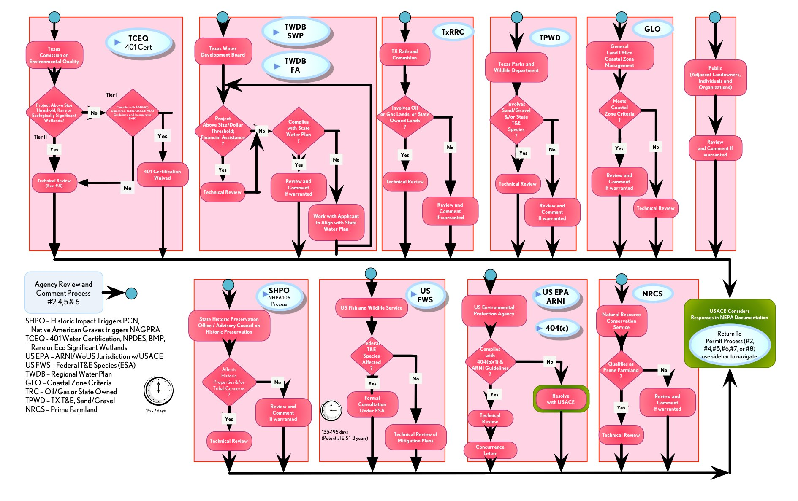
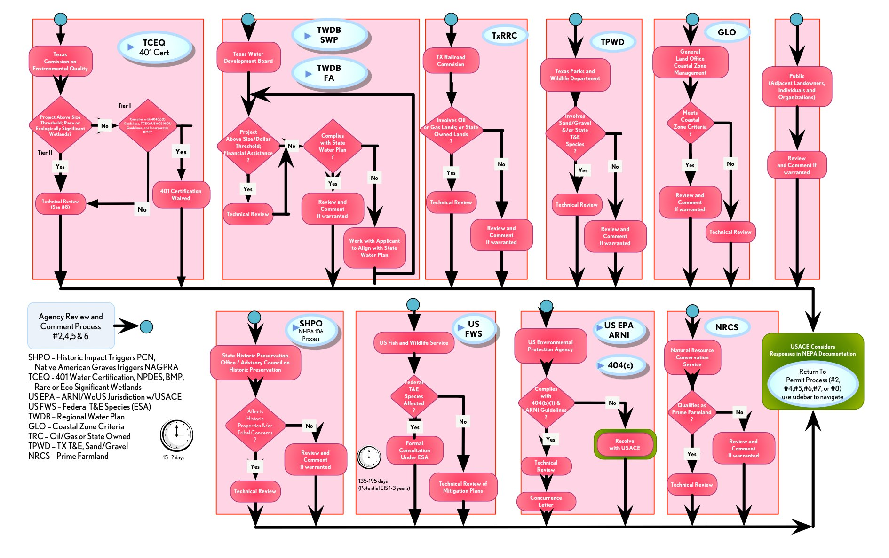

#9 Multi-Agency Technical Analysis And/or Review Process
Multi- Agency and Public Coordination and Responsibilities.
Begins with Pre-Application or Public Notice. Includes Review and Comment and/or Technical Analysis.
Begins with Pre-Application or Public Notice. Includes Review and Comment and/or Technical Analysis.
